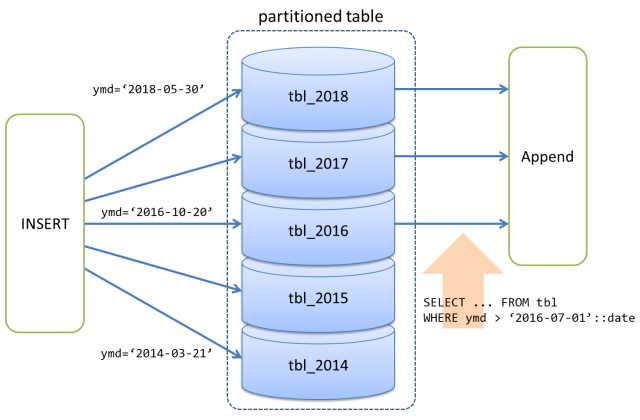

Partitioning
This chapter introduces the way to use PG-Strom and the partitioning feature of PostgreSQL. Note that this chapter is only valid when PG-Strom works on PostgreSQL v11 or later.
Also see PostgreSQL Document: Table Partitioning for more details of the partitioning feature of PostgreSQL.
Brief overview
PostgreSQL v10 newly support table partitioning. This mechanism splits one logically large table into physically small pieces. It is valuable because it can skip partitioned child tables which is obviously unnecessary to scan from the search qualification, and it can offer broader I/O bandwidth by physically distributed storage and so on.
PostgreSQL v10 supports two kinds of them: range-partitioning and list-partitioning. Then, PostgreSQL v11 newly supports hash-partitioning and partition-wise JOINs.
The diagram below shows a range-partitioning configuration with date-type key values.
A record which has 2018-05-30 as key is distributed to the partition child table tbl_2018, in the same way, a record which has 2014-03-21 is distributed to the partition child table tbl_2014, and so on.
In case when scan qualifier WHERE ymd > '2016-07-01'::date is added on scan of the partitioned table for example, it is obvious that tbl_2014 and tbl_2015 contains no records to match, therefore, PostgreSQL' optimizer constructs query execution plan which runs on only tbl_2016, tbl_2017 and tbl_2018 then merges their results by Append node. It shall perform as if records are read from one logical table.

When PG-Strom is used with table partitioning of PostgreSQL together, its optimizer may choose GpuScan to scan the individual partition child tables to be scanned, in the result of cost estimation. In this case, Append node merges the results of GpuScan.
On the other hands, if query runs JOIN or GROUP BY, which can be accelerated by PG-Strom, next to the scan on partitioned table, it needs consideration from the standpoint of performance optimization.
For example, in case when query scans non-partitioned table then runs JOIN with other tables and GROUP BY, under some conditions, it can handle step-step data exchange on GPU device memory. It is an optimal workload for PG-Strom due to minimized data exchange between GPU and CPU.
In case when query runs corresponding workload on the partitioned table, it is problematic that Append node is injected into between the child tables scan and JOIN/GROUP BY. Under the query execution plan, the result of GpuScan must be written back to the host system, then Append merges them and send back the data to GPU to run the following GpuJoin and GpuPreAgg. It is never efficient query execution.

The example below shows a query execution plan to the query which includes JOIN and GROUP BY towards the partitioned table pt by the key field ymd of date type; per year distribution.
Due to the scan qualification, it omits scan on the partition child tables for 2016 or prior, in addition, a combined JOIN and GROUP BY on the pt_2017, pt_2018 and pt_2019 shall be executed prior to the Append.
# EXPLAIN SELECT cat,count(*),avg(ax)
FROM pt NATURAL JOIN t1
WHERE ymd > '2017-01-01'::date
GROUP BY cat;
QUERY PLAN
--------------------------------------------------------------------------------
HashAggregate (cost=196410.07..196412.57 rows=200 width=48)
Group Key: pt_2017.cat
-> Gather (cost=66085.69..196389.07 rows=1200 width=72)
Workers Planned: 2
-> Parallel Append (cost=65085.69..195269.07 rows=600 width=72)
-> Parallel Custom Scan (GpuPreAgg) (cost=65085.69..65089.69 rows=200 width=72)
Reduction: Local
Combined GpuJoin: enabled
-> Parallel Custom Scan (GpuJoin) on pt_2017 (cost=32296.64..74474.20 rows=1050772 width=40)
Outer Scan: pt_2017 (cost=28540.80..66891.11 rows=1050772 width=36)
Outer Scan Filter: (ymd > '2017-01-01'::date)
Depth 1: GpuHashJoin (nrows 1050772...2521854)
HashKeys: pt_2017.aid
JoinQuals: (pt_2017.aid = t1.aid)
KDS-Hash (size: 10.78MB)
-> Seq Scan on t1 (cost=0.00..1935.00 rows=100000 width=12)
-> Parallel Custom Scan (GpuPreAgg) (cost=65078.35..65082.35 rows=200 width=72)
Reduction: Local
Combined GpuJoin: enabled
-> Parallel Custom Scan (GpuJoin) on pt_2018 (cost=32296.65..74465.75 rows=1050649 width=40)
Outer Scan: pt_2018 (cost=28540.81..66883.43 rows=1050649 width=36)
Outer Scan Filter: (ymd > '2017-01-01'::date)
Depth 1: GpuHashJoin (nrows 1050649...2521557)
HashKeys: pt_2018.aid
JoinQuals: (pt_2018.aid = t1.aid)
KDS-Hash (size: 10.78MB)
-> Seq Scan on t1 (cost=0.00..1935.00 rows=100000 width=12)
-> Parallel Custom Scan (GpuPreAgg) (cost=65093.03..65097.03 rows=200 width=72)
Reduction: Local
Combined GpuJoin: enabled
-> Parallel Custom Scan (GpuJoin) on pt_2019 (cost=32296.65..74482.64 rows=1050896 width=40)
Outer Scan: pt_2019 (cost=28540.80..66898.79 rows=1050896 width=36)
Outer Scan Filter: (ymd > '2017-01-01'::date)
Depth 1: GpuHashJoin (nrows 1050896...2522151)
HashKeys: pt_2019.aid
JoinQuals: (pt_2019.aid = t1.aid)
KDS-Hash (size: 10.78MB)
-> Seq Scan on t1 (cost=0.00..1935.00 rows=100000 width=12)
(38 rows)
Configuration and Operation
By the GUC parameters below, PG-Strom enables/disables the push-down of JOIN/GROUP BY under the partition child tables.
| Parameter | Type | Default | Description |
|---|---|---|---|
pg_strom.enable_partitionwise_gpujoin |
bool |
on |
Enables/disables whether GpuJoin is pushed down to the partition children. Available only PostgreSQL v10 or later. |
pg_strom.enable_partitionwise_gpupreagg |
bool |
on |
Enables/disables whether GpuPreAgg is pushed down to the partition children. Available only PostgreSQL v10 or later. |
Default of the parameters are on. Once set to off, push-down is disabled.
The query execution plan is changed as follows, by EXPLAIN command for the query above section. It uses GpuScan to scan the partition child tables, however, their results are once written back to the host system, then merged by Append and moved to GPU again to process GpuJoin.
postgres=# set pg_strom.enable_partitionwise_gpujoin = off;
SET
postgres=# set pg_strom.enable_partitionwise_gpupreagg = off;
SET
postgres=# EXPLAIN SELECT cat,count(*),avg(ax) FROM pt NATURAL JOIN t1 WHERE ymd > '2017-01-01'::date group by cat;
QUERY PLAN
--------------------------------------------------------------------------------------------------------------------------------
Finalize GroupAggregate (cost=341392.92..341399.42 rows=200 width=48)
Group Key: pt.cat
-> Sort (cost=341392.92..341393.92 rows=400 width=72)
Sort Key: pt.cat
-> Gather (cost=341333.63..341375.63 rows=400 width=72)
Workers Planned: 2
-> Partial HashAggregate (cost=340333.63..340335.63 rows=200 width=72)
Group Key: pt.cat
-> Parallel Custom Scan (GpuJoin) (cost=283591.92..283591.92 rows=7565562 width=40)
Depth 1: GpuHashJoin (nrows 3152318...7565562)
HashKeys: pt.aid
JoinQuals: (pt.aid = t1.aid)
KDS-Hash (size: 10.78MB)
-> Append (cost=28540.80..200673.34 rows=3152318 width=36)
-> Parallel Custom Scan (GpuScan) on pt_2017 (cost=28540.80..66891.11 rows=1050772 width=36)
GPU Filter: (ymd > '2017-01-01'::date)
-> Parallel Custom Scan (GpuScan) on pt_2018 (cost=28540.81..66883.43 rows=1050649 width=36)
GPU Filter: (ymd > '2017-01-01'::date)
-> Parallel Custom Scan (GpuScan) on pt_2019 (cost=28540.80..66898.79 rows=1050896 width=36)
GPU Filter: (ymd > '2017-01-01'::date)
-> Seq Scan on t1 (cost=0.00..1935.00 rows=100000 width=12)
(21 rows)
Consideration for SSD/GPU location
Limitations
Experimental Feature
It is an experimental feature to push down GpuJoin and GpuPreAgg to the partitioned child tables, so it may lead unexpected behavior or system crash. In such case, disable the feature using pg_strom.enable_partitionwise_gpujoin or pg_strom.enable_partitionwise_gpupreagg. And report your case to PG-Strom Issues.